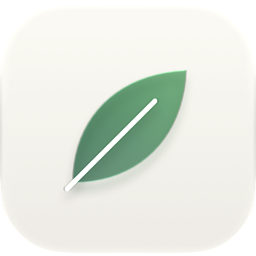
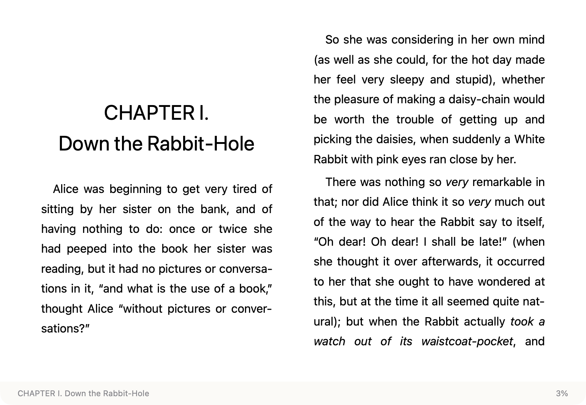
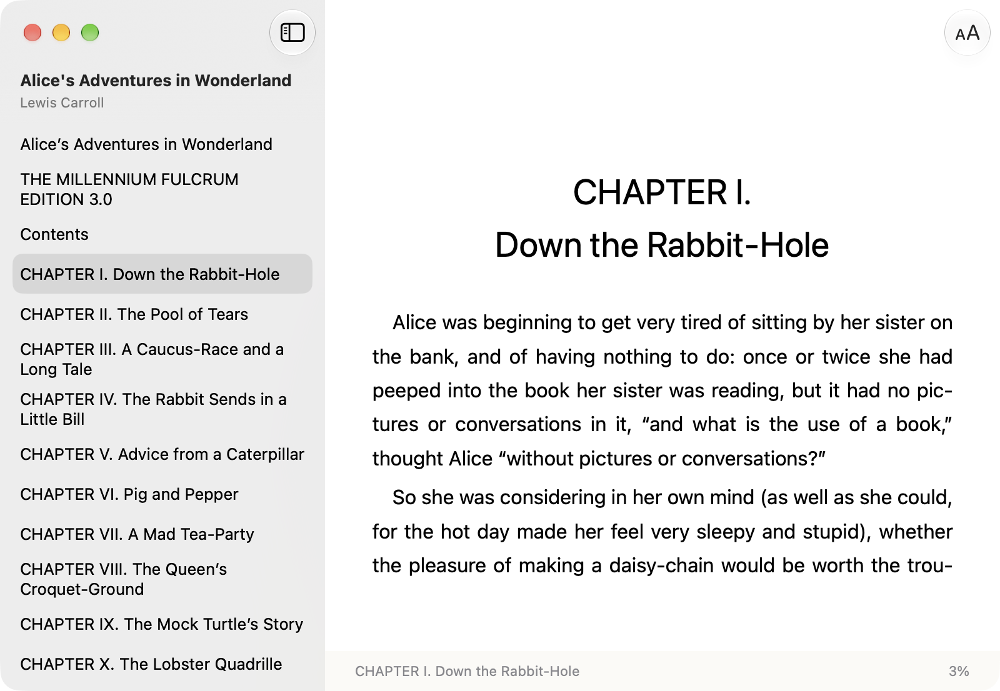

免费的 Mac 电子书阅读器 · EPUB · MOBI · AZW3
一个只做阅读的 macOS 电子书阅读器。在访达里双击一本书就开始读，没有书架，没有导入。

Leaf 是一个免费开源的 macOS 电子书阅读器。它直接从访达打开 EPUB、MOBI 和 AZW3 文件，不需要导入书库，会记住上次读到的位置，关掉窗口即退出。Leaf 基于 SwiftUI 和 WebKit 开发，排版由 foliate-js 完成，需要 macOS 15 或更高版本。
Leaf 只做一件事：让你尽快读到书里的第一行字。
EPUB、MOBI、AZW3 都能直接打开，不用先转换。
按文件内容识别每本书，改名、换位置后依然回到原处。
⌘T 打开侧栏，高亮当前章节，点一下就跳过去。
字号 80%–200%，三档行距，原书、黑体、宋体可以切换。
不在后台常驻，不弹书库，读完关掉就干干净净。
SwiftUI + WebKit，约 2.4 MB，跟随系统深浅色。
侧栏用的是系统原生样式。翻页时高亮跟着当前章节走；点一下正文，侧栏就会收起。

Apple Books 和 Calibre 都是好工具。只想打开一个文件读一读时，选 Leaf。
| Leaf | Apple Books | Calibre | |
|---|---|---|---|
| EPUB | ✓ | ✓ | ✓ |
| MOBI · AZW3 | ✓ （无 DRM） | 不支持 | ✓ |
| 不建书库直接打开 | ✓ | 需导入书库 | 以书库为主，阅读器可单独启动 |
| 安装包大小 | 约 2.4 MB | 系统自带 | 约 350 MB |
| 系统要求 | macOS 15+ | — | macOS 14+ |
| 价格 · 协议 | 免费 · MIT | 免费 · 闭源 | 免费 · GPL-3.0 |
以上信息于 2026 年 10 月 3 日核对，来源：Apple Books 帮助、calibre 9.15.0 macOS 下载页、calibre 阅读器手册。
Leaf 是个人开源项目，没有经过 Apple 公证。第一次打开需要手动放行一次，之后就和普通 App 一样。
打开下载的 Leaf.dmg，把 Leaf 拖到 Applications 文件夹。
双击 Leaf，系统提示无法验证开发者，点「完成」。
「系统设置 › 隐私与安全性」拉到底部，点「仍要打开」。
需要 macOS 15 或更高。从 Kindle 商店购买的带 DRM 电子书无法打开。
手不用离开键盘。
| 翻页 | ←→Space |
| 目录 | ⌘T |
| 放大 / 缩小 | ⌘=⌘- |
| 实际大小 | ⌘0 |
安装和使用中最常被问到的几件事。
装好 Leaf 后，在访达里双击文件，或右键选「打开方式 › Leaf」。文件需要无 DRM。
免费，并以 MIT 协议开源。
Leaf 没有经过 Apple 公证。先打开一次并关掉提示，再到「系统设置 › 隐私与安全性」点「仍要打开」。只需操作一次。
只能打开无 DRM 的文件。Kindle 商店购买的书通常带 DRM，Leaf 打不开。
没有。Leaf 直接打开书所在的位置，不导入也不复制文件，并记住你读到哪里。